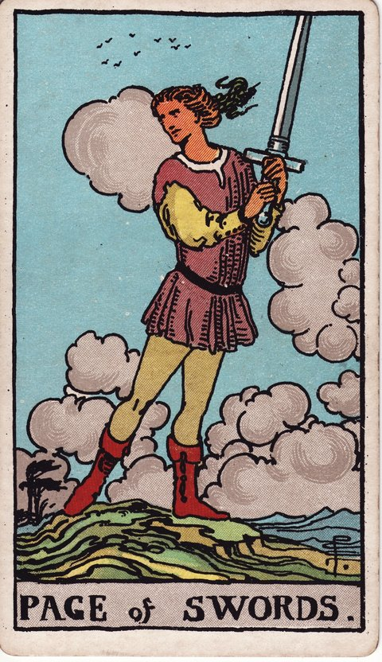

소드 · 타로 카드 백과사전
소드 시종

정방향
키워드: 호기심 어린 탐색 · 새로운 정보 · 신중한 경계 · 동하는 관심 · 차근차근 따라가 보기 · 다방면의 소문
조언: 새로운 정보에 호기심을 갖되 신중하게 살펴보는 태도를 유지하세요.
연애운
솔로
말이 잘 통하는 사람을 알아가며 다음 만남이 은근히 기다려지는 시기입니다. 너무 서두르지 않아도 좋은 만남은 자연스럽게 이어질 수 있습니다.
커플
상대의 새로운 면을 발견하며 호기심 어린 시선으로 바라보게 되는 시기입니다. 낯선 모습이라도 색안경 끼지 않고 있는 그대로 받아들여보세요.
재물운
소비
특가나 할인 정보를 발견하면 이것저것 비교해보며 알뜰하게 지출 계획을 세우는 시기입니다. 여러 곳을 비교하는 수고가 알찬 소비로 이어질 수 있습니다.
투자
낯선 투자 상품의 구조와 위험도를 하나하나 뜯어보며 이해하려 애쓰는 시기입니다. 완전히 이해되기 전까지는 소액으로만 접근해보는 것이 안전합니다.
취업운
구직
관심 가는 회사의 조직문화와 복지를 이곳저곳 찾아보며 지원을 준비하는 시기입니다. 발품을 들인 만큼 지원서에도 구체적인 관심을 담아낼 수 있습니다.
이직
괜찮아 보이는 자리가 눈에 띄면 조건을 하나씩 꼼꼼히 따져보며 가능성을 타진하는 시기입니다. 성급하게 결정하지 말고 충분히 알아본 뒤 움직여도 늦지 않습니다.
직장운
팀워크
팀에 새로 들어온 툴이나 프로세스를 다 함께 시험 삼아 써보는 시기입니다. 낯선 방식이라도 열린 마음으로 시도해보면 팀에 새로운 활력이 될 수 있습니다.
개인성과
낯선 업무를 맡아보며 이것저것 시행착오를 거쳐 요령을 익혀가는 시기입니다. 처음엔 서툴러도 시행착오를 통해 배우는 것이 오히려 큰 자산이 됩니다.
사업운
창업준비
떠오르는 아이템의 시장성을 이곳저곳 발품 팔아 알아보는 시기입니다. 발로 뛰며 얻은 생생한 정보가 사업 계획을 더 단단하게 만들어줍니다.
운영중
경쟁사의 새로운 시도를 살펴보며 우리 사업에 적용할 점은 없는지 궁리하는 시기입니다. 무작정 따라 하기보다 우리 상황에 맞게 응용하는 시각이 필요합니다.
학업운
시험준비
친구가 추천해준 색다른 암기법을 재미 삼아 하나씩 따라 해보는 시기입니다. 여러 방법을 시도해보며 자신에게 맞는 방식을 찾아가면 됩니다.
진로고민
다양한 진로 정보를 호기심 있게 탐색하는 시기입니다. 아직 결론을 서두르지 말고 최대한 많은 선택지를 살펴보세요.
건강운
신체
몸에 좋다는 새로운 습관이나 운동법을 시험 삼아 하나씩 시도해보는 시기입니다. 몸에 맞지 않으면 무리하지 말고 다른 방법으로 바꿔봐도 됩니다.
정신
낯선 관점의 책이나 영상을 접하며 생각의 폭이 조금씩 넓어지는 시기입니다. 새로운 시각을 받아들이는 유연함이 마음의 여유로 이어질 수 있습니다.
대인관계운
새로운 인연
처음 만난 사람의 여러 모습이 궁금해지지만 서둘러 다가가지는 않는 시기입니다. 판단을 서두르지 말고 여러 모습을 편안하게 지켜봐도 좋습니다.
기존 관계
오래 알고 지낸 사이라도 몰랐던 취향이나 생각을 새삼 알게 되는 시기입니다. 익숙한 사이일수록 새로운 발견이 관계에 신선함을 더해줄 수 있습니다.
명예운
우연히 알려진 좋은 소식 하나로 주변의 평가가 조금씩 달라지는 시기입니다. 좋은 흐름을 이어가려면 꾸준한 모습을 함께 보여주는 것이 중요합니다.
이사운
낯선 동네나 이사할 곳의 분위기를 미리 둘러보며 궁금증을 채워가는 시기입니다. 직접 둘러본 정보가 나중에 큰 도움이 될 수 있습니다.
자식운
아이의 새로운 모습이나 관심사를 호기심 있게 지켜보는 시기입니다. 판단하지 않고 지켜보는 태도가 아이의 마음을 더 편하게 만들어줍니다.
역방향
키워드: 성급한 판단 · 근거 없는 소문 · 검증되지 않은 정보 · 솔깃해지는 마음의 틈 · 앞서 나간 판단 · 충분히 살핀 후의 결단
조언: 확인되지 않은 소문에 휘둘리지 말고 사실부터 검증해보세요.
연애운
솔로
충분히 알기도 전에 성급하게 판단해 좋은 인연을 놓칠 수 있는 시기입니다. 속단하기 전에 몇 번 더 만나보며 판단을 미뤄보는 것이 좋습니다.
커플
확인되지 않은 뒷이야기를 곧이곧대로 믿다가 괜한 다툼으로 번질 수 있는 시기입니다. 소문을 그대로 믿기보다 상대에게 직접 확인하는 것이 먼저입니다.
재물운
소비
특가라는 말에 혹해 별생각 없이 결제부터 하고 나중에 후회할 수 있는 시기입니다. 결제 버튼을 누르기 전에 정말 필요한지 한 번 더 생각해보세요.
투자
누군가 슬쩍 흘린 정보만 믿고 제대로 알아보지도 않은 채 돈을 넣었다가 낭패를 볼 수 있는 시기입니다. 출처가 불분명한 정보에는 큰돈을 걸지 않는 것이 원칙입니다.
취업운
구직
회사에 대해 제대로 알아보지도 않고 지원했다가 막상 다니게 되면 후회할 수 있는 시기입니다. 지원 전에 재직자 후기나 평판을 조금 더 찾아보는 것이 도움이 됩니다.
이직
동료의 귀띔만 믿고 덜컥 이직을 저질렀다가 예상과 다른 상황에 당황할 수 있는 시기입니다. 중요한 결정일수록 여러 경로로 사실을 다시 확인해보세요.
직장운
팀워크
출처가 분명치 않은 이야기가 퍼지며 팀 전체가 혼란스러워질 수 있는 시기입니다. 소문의 진원지를 좇기보다 사실을 명확히 정리해 공유하는 것이 우선입니다.
개인성과
성급한 판단으로 업무에서 신뢰를 잃을 수 있는 시기입니다. 결정을 내리기 전에 한 번 더 확인하는 습관을 들이면 실수를 줄일 수 있습니다.
사업운
창업준비
제대로 검증하지 않은 정보로 사업 방향을 잘못 잡을 수 있는 시기입니다. 확신이 서기 전까지는 방향을 확정 짓지 말고 계속 검증해보세요.
운영중
누가 흘린 말 한마디에 휘둘려 사업의 중요한 결정을 성급하게 내릴 수 있는 시기입니다. 소문보다 실제 데이터를 근거로 결정을 내리는 습관이 필요합니다.
학업운
시험준비
인터넷에 떠도는 검증 안 된 공부법에 매달리다 오히려 시간만 허비할 수 있는 시기입니다. 검증된 방법으로 돌아가는 것이 오히려 시간을 아끼는 길일 수 있습니다.
진로고민
주변의 한마디에 흔들려 충분히 고민하지 못한 채 진로를 정해버릴 수 있는 시기입니다. 한 사람의 의견에만 기대지 말고 여러 정보를 함께 견줘보세요.
건강운
신체
출처가 불분명한 건강 정보를 따라 하다 오히려 몸에 무리가 갈 수 있는 시기입니다. 몸에 이상이 느껴진다면 검증된 방법이나 전문가의 진단을 우선하세요.
정신
근거 없는 걱정에 휘둘려 마음이 어지러울 수 있는 시기입니다. 떠도는 이야기에 일일이 반응하지 않는 것도 마음을 지키는 방법입니다.
대인관계운
새로운 인연
겉으로 보이는 한두 가지 모습만으로 상대를 단정 지어버릴 수 있는 시기입니다. 조금 더 시간을 두고 지켜보면 처음의 판단이 달라질 수 있습니다.
기존 관계
누군가를 통해 전해 들은 이야기 하나로 오래된 사이에 서운함이 쌓일 수 있는 시기입니다. 전해 들은 말보다 직접 나눈 대화를 더 믿어보세요.
명예운
누군가 흘린 뒷말 하나가 예상외로 크게 부풀려져 이미지에 타격을 줄 수 있는 시기입니다. 사실이 아닌 부분은 침착하게 바로잡아 나가는 것이 필요합니다.
이사운
이사 갈 곳의 정보를 제대로 알아보지 않아 막상 도착해서 당황스러운 일이 생길 수 있는 시기입니다. 다음번에는 직접 확인한 정보만 믿고 결정하는 것이 안전합니다.
자식운
다른 집 이야기에 마음이 흔들려 정작 우리 아이를 있는 그대로 보지 못할 수 있는 시기입니다. 비교하는 마음을 내려놓고 우리 아이만의 속도를 인정해주세요.
같은 슈트: 소드 에이스 · 소드 2 · 소드 3 · 소드 4 · 소드 5 · 소드 6 · 소드 7 · 소드 8 · 소드 9 · 소드 10 · 소드 시종 · 소드 기사 · 소드 퀸 · 소드 킹
홈에서 직접 카드 뽑아보기 ↗